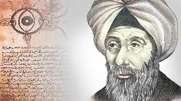

أخبار علمية ·
الحسن بن الهيثم في عجالة – د. عبد المجيد نصير

د. عبد المجيد نصير
أستاذ شرف-جامعة العلوم والتكنولوجيا الأردنية
عضو مجمع اللغة العربية الأردني
رئيس الجمعية الأردنية لتاريخ العلوم
ولد أبو علي الحسن بن الحسن بن الهيثم في البصرة سنة 354هـ/965م، من أصل عربي. كان ضئيل الجسم، قصير القامة، ضعيف البنية. لكنه كان محبا للعلم والمعرفة، دقيق الملاحظة، منصرفا عن اللهو. قال فيه أبي أصيبعة: “وكان ابن الهيثم فاضل النفس، قوي الذكاء، متفننا في العلوم. لم يماثله أحد من أهل زمانه. وكان دائم الاشتغال، كثير التصنيف، وافر الزهد، محبا للخير، وكان حسن الخط، جيد المعرفة باللغة العربية”. (عيون الأنباء، ص 550).
سافر في طلب العلم لأصقاع شتى، إلى بغداد والشام ومصر. قال البيهقي: “وأقام في الشام عند أمير من أمرائها. فأدرّ عليه ذلك الأمير، وأجرى عليه أموالا كثيرة. فقال أبو علي (يكفيني قوت يومي). ولم يقبل إلا نفقة احتاج إليها، ولباسا متوسطا”. (تاريخ حكماء الإسلام، ص 86).
درس شتى العلوم مما ترجم عن الإغريق وغيرهم، وعمل لبعضها ملخصات، وصنف في موضوعات مختلفة وأبدع. درس الطب في بغداد واجتاز فحص الممارسة الذي وضعه أولا الخليفة العباسي المقتدر بالله سنة 921م. كما كان له باع مهم في فنون الرياضيات والفيزياء وفي المنهج العلمي. وكان، وهو ينقل عن غيره، لا يستحي من نسبته إلى صاحبه. نقل عنه البيهقي قوله: “إذا وجدت كلاما لغيرك فلا تنسبه لنفسك، واكتف باستفادتك منه. فإن الولد يلحق بأبيه، والكلام بصاحبه”. (ص88).
نقل إلى الخليفة الفاطمي الحاكم بأمر الله ما قاله ابن الهيثم في أحد مجالسه في البصرة: “لو كنت بمصر لعملت في نيلها عملا يصلح به النفع في كل حالة من حالاته. فقد بلغني أنه ينحدر من موضع عال، وهو في طرف الإقليم المصري”. (ابن القفطي، إخبار العلماء بأخبار الحكماء، ص114). فاستدعاه، واستقبله على أحد أبواب القاهرة استقبالا حافلا، وأعطاه سكنا لائقا وأجرى عليه دخلا وافرا. وبعد مدة، طلب منه أن نظر في أمر النيل. وجهز له بعثة علمية، وسيره في المراكب في النيل. فبلغ أسوان ثم منطقة الجنادك. وتفحص ابن الهيثم المنطقة، فأدرك أن المطلوب أكبر من أن يقدر عليه بصناعة ذلك العصر. فعاد إلى القاهرة واعتذر إلى الحاكم بأمر الله، الذي قبل عذره. ثم ولاه منصبا إداريا. فقبله على مضض. وحتى يسلم من المزاج المتقلب للحاكم ادعى الجنون. فجعل الحاكم له بيتا، وأجرى عليه رزقا، ومن يعتني به. وبعد وفاة الحاكم عاد ابن الهيثم إلى نشاطه العلمي، واستغنى عن جراية السلطان. فكان ينسخ ثلاثة كتب بخطه الجميل (الأصول لأقليدس، والمتوسطات لأبناء موسى بن شاكر، والمجسطي لبطلميوس). ويأتيه من يشتري هذه النسخ بمئة وخمسين دينارا، تكفي حاجته. (القفطي ص 115). كان غزير الإنتاج في مختلف حقول المعرفة. وبلغ مجموع ما كتبه من رسائل وكتب 237.
مرض في آخر حياته مرضا شديدا. حتى إذا ما أحس بالموت، توجه إلى القبلة وقال: “”ضاعت الهندسة، وبطلت المعالجة وعلوم الطب، ولم يبقَ إلا تسليم الروح إلى خالقها وبارئها”. (القفطي ص 115). وأخيرا قال: “إليك المرجع وإليك المصير يا رب، عليك توكلت وإليك أنبت” (القفطي ص 115). ثم فاضت روحه، رحمه الله، سنة 440هـ/1039.
عاش ابن الهيثم في العصر الذهبي للعلم في الحضارة العربية الإسلامية. وعاصر ابن الهيثم مجموعة كبيرة من كبار العلماء. نذكر منهم: البيروني وابن عراق وابن يونس وابن السمح والخجندي والكرجي وكوشيار الجيلي وابن سينا والنسوي والكرماني والسرقسطي وغيرهم.
أهم إنجازاته العلمية:
1-المنهج العلمي: يعد ابن الهيثم مؤسسا رئيسا للمنهج العلمي قبل الأوربيين بقرون. على أنه سار على خطى جابر بن حيان الذي اهتم بالتجربة وسماها “الدربة”. وقد لخص د. عمر فروخ منهج ابن الهيثم بالنقاط الآتية:
أ-الاستقراء، وهو استخراج القاعدة العامة من مفردات الوقائع.
ب-الاستنباط، وهو تفريع الأحوال المفردة من القاعدة العامة.
جـ-القياس، وهو لموازنة بين الوقائع المختلفة والمقارنة بين النتائج.
د-المشاهدة، وهي النظر في الأمور الجارية في بيئتها المخصوصة.
هـ-الملاحظة، وهي التفطن لما يتفق وما يختلف من هذه الأمور.
و-تكرار المشاهدة والتجربة من حقيقة ما تقوله فرضية ما. (تاريخ علوم العرب)
ورأى كوهل K. Kohl في دراسة ابن الهيثم لضوء القمر على “أنها أول محاولة دراسة فيزيائية فلكية تفصيلية” في مؤلفه “مقالة في ضوء القمر”. وفيها اقترب “حتى من دراسة ضوء القمر بأدوات تجريبية”. إنه الأول الذي استعمل الحجرة السوداء camera obscura مما يوضح أنه كان باحثا طبيعيا، وانه “المؤسس للبحث الطبيعي الحديث”. K. Kohl, Uber das Licht des Mondes in SPPMSE 1926-1927/306.
2-الرياضيات. أورد له سيزكين 36 مؤلفا في الرياضيات مخطوطاتها موجودة، حقق عددا منها رشدي راشد، وعلي عبد اللطيف وغيرهما، في الهندسة المستوية والمجسمة، وفي خواص المقطوع، وفي الحساب، وفي علم العدد، وفي الأوسعيات (وهي السطوح أو الأجسام الأكبر ذوات الإحاطة المتساوية، حيث أن الدائرة للسطوح والكرة للأجسام هي التي تفي بالغرض)، وغير ذلك. نذكر بقليل من التفصيل بعضها:
ا-مسألة ابن الهيثم: عرف الأوربيون هذه المسألة وأولوها اهتماما خاصا حتى سميت عندهم مسألة الحسن Al-Hazen Problem. ونصها الرياضي هو: افرض نقطتين في مستوى دائرة معلومة، والمطلوب رسم مستقيمين منهما يتقاطعان على محيط الدائرة، ويكونان زاويتين متطابقتين مع العمود على الدائرة في تلك النقطة. وهي في الضوء كما يلي: افرض نقطتين أ، ب خارج سطح ما، وقد لا يكون مستويا، جد النقطة جـ على هذا السطح حيث يكون أ جـ، شعاعا ساقطا، ويكون ب جـ شعاعا منعكسا. ويؤدي حلها العام إلى معادلة من الدرجة الرابعة، مما أوصله إلى جمع متسلسلات من الدرجة الرابعة. وهي إلى الأس ك على النحو:
(ن+1) نΣل=1 عل = نΣل=1 عا+1 + نΣص=1 ( صΣل=1 عل )
وقد برهنها للأعداد ن = 1، 2، 3، 4. وقد برهنها بطريقة مقاربة لطريقة الاستدلال الرياضي، مما يعني إمكانية تعميمها إلى أي ن عدد صحيح موجب؛ ويكون الجواب:
نΣن+1 ع4 = (5/ن+ 5/1) ن (ن+2/1) [ن(ن+1) – 3/1)]
ويساوى حسابه هذا مع حساب التكامل المحدد التالي:
ل∫0 س4 دس
وبهذا يكون ابن الهيثم والكرجي السباقين إلى طريقة الاستدلال الرياضي. وتوصل بذلك إلى مبادئ التكامل، واستخدم ذلك لحساب حجم المجسم المكافئي. وقد شغلت مسألته هذه كبار الرياضيين الأوربيين حتى القرن الثامن عشر.
ب-في الهندسة له ” كتاب في حل شكوك أقليدس في الأصول وشرح معانيه” و “شرح مصادرات أقليدس”. حاول برهنة المصادرة الخامسة (مصادرة التوازي). وقاده ذلك إلى تقديم رباعي فيه ثلاث زوايا قائم ويبقى وضع الزاوية الرابعة. فإن كانت قائمة حصلنا على الهندسة الأقليدية المستوية. وإذا كانت حادة فالهندسة الناتجة هي الزائدية غير الأقليدية. ويسمى هذا الرباعي اليوم رباعي لامبرت. والأولى تسميته رباعي ابن الهيثم-لامبرت.
وـفي نظرية العدد له مساهمات مهمة. فقد قدم أول قاعدة للأعداد التامة (وهي الأعداد التي تساوي مجموع عواملها، مثل 6=1+2+3). وهذه القاعدة هي 2ن-1 (ن2 -1) حيث 2ن -1 عدد أولي. ولم يستطع برهانها، وبرهنها أويلر في القرن الثامن عشر. كما أن عمله في المتطابقات cogruences أوصله إلى مبرهنة ولسن Wilson ومبرهنة الباقي الصينية.
كما ذكر له سيزكين 35 عنوانا في الرياضيات، نقلا عن ابن أبي أصيبعة، 35 عنوانا، ربما ضاعت مخطوطاتها.
3-الفيزياء. له فيها إنجازات عظيمة، وأهمها في علم المناظر، وكتابه الذي يحمل هذا الاسم شاهد على ذلك، وقد ألفه سنة 1021. وقد حققه الدكتور عبد الحليم صبرة. والكتاب من سبع مقالات هي:
المقالة الأولى: في كيفية الإبصار بالجملة. وهي من عدة فصول: صدر الكتاب، خواص البصر، وفي البحث وعن خواص الأضواء، وعن كيفية إشراق الأضواء فيما يعرض بين البصر والضوء، وفي هيئة البصر، وفي كيفية الإبصار، وفي منافع آلات البصر، وفي علل المعاني التي لا يتم الإبصار إلا بها وباجتماعها.
المقالة الثانية: في أغلاط البصر فيما يدركه على استقامة وعللها، وهي من عدة فصول: صدر المقالة، وفي تمييز خطوط الشعاع، وفي كيفية إدراك كل واحد من المعاني الجزئية التي تدرك بحاسة البصر، وفي تمييز إدراك البصر للمبصَرات.
المقالة الثالثة: في أغلاط البصر فيما يدركه على استقامة وعللها، وهي من عدة فصول صدر المقالة، وفي تقديم ما يجب تقديمه لتبيين الكلام في أغلاط البصر، وفي العلل التي من أجلها يعرض للبصر الغلط، وفي تمييز أغلاط البصر، وفي كيفيات أغلاط البصر التي تكون بمجرد الحس، وفي كيفيات أغلاط البصر التي تكون في المعرفة، وفي كيفيات أغلاط البصر التي تكون بالقياس.
المقالة الرابعة: في كيفية إدراك البصر بالانعكاس عن الأجسام الصقيلة، وتشمل الفصول التالية: صدر المقالة، وفي أن صور المبصرات تنعكس عن الأجسام الصقيلة، وفي كيفية انعكاس الصور عن الأجسام الصقيلة، وفي أن ما يدركه البصر في الأجسام الصقيلة هو إدراك البصر للمبصرات بالانعكاس.
المقالة الخامسة: في مواضيع الخيالات وهي الصور التي ترى في الأجسام الصقيلة وهو إدراك البصر للمبصرات بالانعكاس.
المقالة السادسة: في أغلاط البصر فيما يدركه بالانعكاس وعللها، وتشمل الفصول التالية: صدر المقالة، وفي أغلاط البصر التي تعرض من أجل الانعكاس، وفي أغلاط البصر التي تعرض في المرايا المسطحة، وفي أغلاط البصر التي تعرض في المرايا الكرية المحدبة، وفي أغلاط البصر التي تعرض في المرايا الأسطوانية المحدبة، وفي أغلاط البصر التي تعرض في المرايا الكرية المقعرة، وفي أغلاط البصر التي تعرض في المرايا الأسطوانية المقعرة، وفي أغلاط البصر التي تعرض في المرايا المخروطية المقعرة.
المقالة السابعة: في كيفية إدراك البصر بالانعطاف من وراء الأجسام المشفة المخالفة الشفيف لشفيف الهواء، وتشمل الفصول التالية: صدر المقالة، وفي أن الضوء ينفذ في الأجسام المشفة على سموت خطوط مستقيمة وينعطف إذا صادف جسما مخالف الشفيف لشفيف الجسم الذي هو فيه، وفي كيفية انعطاف الأضواء في الأجسام المشفة، وفي أن ما يدرك بالبصر من وراء الأجسام المشفة المخالفة الشفيف لشفيف الجسم الذي فيه البصر إذا كان مائلا عن الأعمدة القائمة على سطوحها هو إدراك بالانعطاف، وفي الخيال، وفي كيفية إدراك البصر للمبصرات بالانعطاف، وفي أغلاط البصر التي تعرض من أجل الانعطاف.
ملاحظات من ابن الهيثم حول الضوء
طبيعة الضوء: وجدت في زمنه فرضيتان حول طبيعة الضوء يوردهما كما يلي: الأولى، الضوء حرارة نارية منبعثة من الأجسام المضيئة بذواتها، وأنه إذا أشرق على جسم كثيف أسخنه، وإذا انعكس عن مرآة مقعرة واجتمع عند نقطة واحدة أحرق ما عند النقطة من أجسام. (بلغة العلم الحديث، فإن الضوء طاقة تنتقل من شكل لآخر، تفقد وتكتسب). والثانية، أن ضوء الجسم المضيء بذاته هو “صورة جوهرية”، وهذا يقتصر فقط على الجسم المضيء بذاته. وهذا وصف أكثر منه تحديد.
ولم يرجح ابن الهيثم أحدهما على الآخر. على أنه يقول في الضوء إنه جسم مادي لطيف يتألف من أشعة لها أطوال وعروض. وكل شعاع أيا كان فإن له عرضا محددا. ويسمي هذه الأشعة “حبال النور”. وتصدر عن الأجسام المضيئة وتسير في سموت مستقيمة، إذ تنفذ من الأوساط الشفيفة، وهي قابلة للانعكاس والانكسار. والأجسام الشفيفة هي التي ينفذ منها الضوء، ولا تعني الرقة، بل الحالة التي يكون عليها الماء أو الهواء أو البلور.
“إن إنجاز ابن الهيثم في علم المناظر، بالمقارنة مع الكتابات الرياضية اليونانية والعربية التي سبقته، يظهر وللنظرة الأولى، سمتين بارزين هما الاتساع والإصلاح” (الموسوعة ج2 ص843). وقد عالج ميادين مختلفة كما ظهر في كتاباته. وبرنامجه الإصلاحي قاده إلى تنال المسائل المختلفة كل على حدة. وعمله الأساس في هذا الإصلاح هو الفصل، ولأول مرة في تاريخ هذا العلم، بين شروط انتشار الضوء، وشروط رؤية الأجسام. وصار علم المناظر يشمل قسمين: نظرية للرؤية مقرونة بفيزيولوجيا العين وسيكولوجية الإدراك، ونظرية للضوء يرتبط بها علم المناظر الهندسي وعلم المناظر الفيزيائي.
يبدأ كتاب المناظر برفض فكرة ومذهب الإشعاع البصري، أي الصادر من العين ويدافع عن المذهب الإدخالي لأشكال المرئيات، واقفا مع فلاسفة ومعاصرين، منهم ابن سينا. ولكن يخالف هؤلاء في أنه لا يعتبر الأشكال الت تراها العين “كليات” تنبعث من الجسم المرئي تحت تأثير الضوء، بل يعتبرها أشكالا قابلة لتحليل إلى عناصرها، بمعنى وجود شعاع ينبعث من كل نقطة من الجسم المرئي نحو العين. ولذلك تكون العين أداة إبصار بسيطة.
وشروط الرؤية عنده خمسة، هي:
1-يجب أن يكون الجسم المرئي مضيئا بنفسه أو مضاء بمصدر ضوئي آخر.
2-يجب أن يكون الجسم مواجها للعين، بحيث يمكن وصل كل نقطة منه بالعين بخط مستقيم.
3-يجب أن يكون الوسط الفاصل بين الجسم والعين شفافا، دون وجود أي عائق كمد.
4-يجب أن يكون الجسم أكثر كمدا من هذا الوسط.
5-يجب أن يكون الجسم ذا حجم مناسب لدرجة الإبصار.
وعدم توفر هذه الشروط يجعل الرؤية غير ممكنة. وبالنسبة لشروط إمكانية الضوء وانتشاره يذكر:
1-يوجد الضوء بشكل مستقل عن الرؤية وخارجا عنا.
2-يتحرك الضوء بسرعة كبيرة جدا، ولكنها ليست لحظية أو فجائية.
3-يفقد الضوء من شدة وهجه بقدر بعده عن المصدر.
4-ضوء المصدر جوهري، وضوء الجسم المضاء ثانوي أو عابر. وكلاهما ينتشران على الأجسام المحيطة بهما، ويدخلان الأوساط الشفافة، وينيران الأجسام الكمدة، التي بدورها ترسل الضوء.
5-ينتشر الضوء من كل نقطة من الجسم المضيء أو المضاء تبعا لخطوط مستقيمة في الأوساط الشفافة في جميع الاتجاهات. وتكون هذه الخطوط متوازية أو متقاطعة. ولا تندمج الأضواء في أي من الحالين.
6-تنتشر الأضواء المنعكسة أو المنكسرة في خطوط مستقيمة في اتجاهات معينة.
ومن الواضح أن هذه الشروط لا تتعلق بالرؤية. (الموسوعة 845-847)
انعكاس الضوء: وشرح ابن الهيثم ظاهرة الانعكاس ووصل إلى ملاحظة أن (زاوية) الانعكاس عن الأجسام الصقيلة تساوي زاوية الإسقاط. كما اهتم بالسطوح غير الصقيلة كثيرة المسام، وتكون أجزاؤها متفرقة غير متضامنة. فينفذ جزء من الضوء في المسامة ويضيع وينعكس الباقي متفرقا مشتتا.
سرعة الضوء: ولعل ابن الهيثم من توصل إلى أن للضوء سرعة محدودة، وأنه يحتاج إلى زمن لينتقل من مكان إلى آخر. وبكلماته: (إذا كان الثقب مستترا ثم رفع الستار، فوصل الضوء من الثقب إلى الجسم المقابل، ليس يكون إلا في زمان، وإن خفي على الحس”. (المناظر، المقالة الثانية).
انعطاف الضوء: يكون انعطاف الضوء في نظر ابن الهيثم عند انتقاله من وسط لآخر بسبب اختلاف سرعة الضوء في الوسطين. فسرعة الضوء في الوسط المشف الألطف أعلى من سرعته في الوسط المشف الأغلظ.
بعض تجاربه وبحوثه في الضوء
ذكرنا أن ابن الهيثم صقل المنهج العلمي (التجريبي)، ولذلك لا عجب أن يطبق منهجه بنفسه. من هذه التجارب والبحوث في الضوء:
1-تجربة لإثبات أن الضوء يسير في خطوط مستقيمة. التجربة بسيطة. عمل ثقبا صغيرا في حاجز يحول بينه وبين ضوء الشمس. ثم جاء بأنبوب مرن وضع أحد طرفيه على الثقب ونظر في الطرف الآخر مع تحريك الأنبوب في زوايا مختلفة مع الحاجز. ووجد أنه يرى الضوء فقط عندما يتطابق الأنبوب مع خط مستقيم يمر بالثقب.
2-بحث في ظاهرة الإظلال. يحدث إظلال الأجسام على الأرض عندما تقف هذه الأجسام حائلة بين الضوء المشرق عليها والأجسام الكثيفة التي تقابلها. ويعزو ذلك إلى أن الضوء يسير في خطوط مستقيمة، ويصطدم بالجسم الحائل فلا يصل إلى منطقة الجسم الكثيف التي تقع على سمت مستقيم يتشكل من مصدر الضوء والجسم. كما ميز بين الظل (وسماه الظلمة) وشبه الظل (وسماه الظل). وقد يكون بحثه من مقدمات علم الفوتومترية.
3-انخراط الضوء في الثقوب. أدرك ابن الهيثم أن الضوء ينخرط في الثقوب، ويكون مستوى الثقب قاطعا للمخروط. وأثبت أن الجسم المضيء بذاته أو من غيره يشرق من كل نقطة على سطحه. وعمل تجاربه على أضواء عرضية كضوء القمر، وأضواء ذاتية كضوء الشمس.
4-الخزانة المظلمة ذات الثقب. استفاد من انخراط الضوء في الثقب. في عمل خزانة مظلمة ذات ثقب سماها البيت المظلم. ولاحظ تكون صور الأجسام المضيئة التي تقف خارج الخزانة ولعله أدرك أن أوضاع الصور تكون مقلوبة. وكلما كان الثقب ضيقا كانت الصورة أدق وأوضح. ووجد لهذا الثقب أبعادا وشروطا لكي توجد الصورة بدقة. ومن الشكل:
ح ر: أ ب = جـ د: هـ جـ
حيث أ ب هو الجسم المضيء، وتخرج الأشعة منه تعبر الثقب ح ر. ويخرج من النقطة أ شعاعان أحدهما يمس ح ويتقاطع مع الحاجز الورقي في هـ، والآخر يمس ر ويتقاطع مع الحاجز الورقي في أَ. ومن النقطة ب على الجسم المضيء، يخرج شعاعان أحدهما يمس ح ويتقاطع مع الحاجز الورقي في ث، والشعاع الآخر يمس ر ويتقاطع في هـ مع الحاجز الورقي.
وواضح أن صورة النقطة أ على الحاجز الورقي هي هـ أَ؛ وصورة النقطة ب هي هـ ث على الحاجز. وموقع كل من الصورتين على الحاجز مماسة للآخر، ولا يقاطعه. ويتم ذلك إذا تحقق الشرط التالي:
ح ر: أ ب = هـ د : هـ جـ
وضرب لذلك أمثلة عملية مختلفة، منها صورة الهلال الشمسي عند الكسوف. وبيّن صورة هذا الكل بالحسابات الهندسية، ورسوم وصفية، أشارت جميعا إلى أن الصورة تكون مقلوبة.
وهذه هي بداية آلة التصوير (الكاميرا، وربما أصل الكلمة القمرة). وبهذا يكون ابن الهيثم السابق إلى اختراعها. Camera obscura ويؤكد ذلك جورج سارتون Sarton في الموسوعة العلمية.
5-في الألوان وقوس قزح. أخطأ ابن الهيثم عندم اعتبر اللون شيئا قائما بذاته، مختلفا عن الضوء. لكنه انتبه إلى أن اللون الأبيض هو مزيج من الألوان. وليثبت ذلك، عمل دوامة من الألوان وأدارها بسرعة. كما أخفق في تفسير ألوان قوس قزح في أنها ناتجة من انعكاس الضوء وليس من انكساره، كما بيّن ذلك بعده كمال الدين الفارسي. وكمال الدين الفارسي (1267-1319) شرح أفكار ابن الهيثم في كتابه (المخطوط) “تنقيح المناظر لذوي الأبصار والبصائر”، ومن ثم نشرها.
6-العين. وصف طبقات العين كما يقول ابن الهيثم هي أربع: الشحمة البيضاء، وبياض العين وتسمى الملتحمة. وهي معظم العين. والعنبية أي الحدقة. وهي كرة صغيرة جوفاء ذات لون. والقرنية، وهي الطبقة المتينة المشفة تغطي مقدمة العين. وسطحها الخارجي كروي محدب، بينما سطحها الداخلي كروي مقعر. وأخير الجليدية، وهي كرة بيضاء رطبة متماسكة الرطوبة. وذكر ابن الهيثم تفاصيل فيها مخالفة للعلم الحديث؛ إلا أن مجمل وصف العين يبدو مقبولا. ويقول ماكس مايرهوف في ذلك: “كان ابن الهيثم أول من رتب أقسام العين ورسمها بوضوح تام. ووضع لأقسامها أسماء أخذها عنه الطب الغربي، مثل القرنية والشبكية”. (تراث الإسلام، نقلا عن كتاب العلوم البحتة لعلي الدفاع، ص316).
7-نظريته في الإبصار. كانت الفرضيات قبله هما فرضيتا الورود والإبصار. فجاء ابن الهيثم ليصوغ نظرية متكاملة في الإبصار، كانت الأولى في تاريخ العلم. ومع اهتمامه بالجانب التشريحي للعين، فإنه عاملها أيضا كآلة للإبصار. واستفاد من تشريح العين ليقدم نظريته في ورود الشعاع من نقطة المبصَر إلى البصر، مارا بمركز الكرة (العين)، ومن ثمّ ليجري عليه انكسار لأنه على سمت أنصاف أقطار الكرة. وهذا دفعه لأن يعتبر طبقات العين أجزاء من كرات متحدة المركز.
ترتكز نظريته على أن الإبصار يحدث بورود الضوء من كل نقطة من الجسم المبصَر إلى العين. فيدخل القرنية، ويمر من ثقب العنبية إلى الرطوبة البيضية، وبعدها إلى الرطوبة الجليدية. ويدعي أن الجليدية هي أول عضو من طبقات العين يلقاه الضوء النافذ فيها. ولذلك، أي تلف في أجزاء العين سيحول دون وصول الضوء للجليدية ويتسبب بالعمى. كما أن أي تلف بالجليدية يبطل الإحساس بالضوء ويؤدي إلى العمى. ويثور سؤال هنا: كيف يدرك البصر هذه الأجسام مرئية غير ممتزجة في وقت واحد؟ ويكون جوابه في غاية الذكاء، بالفرضية التالية: تدرك العين صور الأجسام مرئية غير ممتزجة، لأنه لكل نقطة على الجسم المبصَر لها نقطة نظيرة على سطح الجليدية متخصصة بالإحساس بصورتها. ويحدث الإحساس من الشعاع الوارد من النقطة على سطح الجسم المبصَر إلى النقطة النظيرة لها على سطح عدسة الجليدية. ولا تحس الجليدية إلا بالأشعة المستقيمة، مما يوجب أن تكون الأشعة ممتدة على السموت العمودية على طبقات العين، حيث تمر بمركز البصر.
ويمكن تخيل مخروط رأسه مركز المبصَر، وقاعدته ثقب العنبية، ويمتد خارجا من هذا الثقب. فإذا صادف مبصَرا، فإن الأضواء الواردة من نقاط المبصَر على سموت المستقيمات التي يلتئم منها المخروط لا تعاني انعطافا، ولهذا لا تحس الجليدية إلا بها. ويكون ترتيب سقوط هذه الأشعة على مقدم الجليدية على ترتيب نقاط الجسم المبصَر. وهذا التفسير مستساغ في العلم الحديث بشكل عام. ونجد ابن الهيثم يستشهد بسقوط الأجسام سقوطا حرا في خطوط مستقيمة ليدعم تفسيره. وماذا عن الأجسام التي تكون خارج مخروط الأشعة، في أن العين تراها وتدركها؟ ويدلل على وجودها بقوله: “وإذا أقام الإنسان سبابته بجفنه الأسفل، وتعمد أن يكون سطحها الأعلى موازيا لسطح بصره بالقياس إلى الجبين، فنه يرى سبابته. وهذه المواضع كلها ظاهرة غير ملتبسة. إنها خارجة عن مخروط الشعاع”. (دراسة مصطفى نظيف ص 234). وهذا يدفعه لتصحيح نظريته السابقة ليتم الإدراك أيضا بالأضواء المنعطفة. فأشعة المخروط المذكور آنفا تنعطف في طبقات العين لتلتقي على الجليدية، إلا سهم المخروط وهو الشعاع الممتد على السمت العمود، فإنه لا يعاني انعطافا على الجليدية حتى بلوغه سطح الزجاجية. ويعتبر أن إدراك الضوء دون انعطاف كما يحصل في الشعاع الممتد على السمت العمودي، أقوى من إدراكه بعد الانعطاف. فالأجسام التي تقع داخل مخروط الأشعة تدرك بالضوء الوارد على سموت الأعمدة، وبالضوء المنعطف أيضا. لذلك تكون رؤيتها أوضح من رؤية الأجسام الخارجة عن مخروط الأشعة التي تدرك بالانعطاف أيضا.
ولا يحصل الإحساس إلا على سموت الأعمدة الخارجة من مركز البصر. وتلتقي الأشعة على الجليدية مكونة صورة الجسم، وتلبث هنيهة ثم تمضي إلى العصب البصري عن طريق ثقب العصبية ثم إلى المخ. وهناك تنطبق صورة كل عين على الأخرى مكونة صورة مجسمة يدرك بها المخ اللون وترتيب النقاط والشكل. ويعني هذا إشارته إلى أعصاب العينين كلتيهما تتقاطعان في المخ. ويدلل على ذلك بأنه إذا أصيب الجانب الأيمن من المخ تعطلت العين اليسرى، وإن أصيب الجانب الأيسر تعطلت العين اليمنى.
ولا شك أن في نظريته أخطاء، وكذلك في وصف العين. فنظريته في الإبصار ليست الحقيقة بدقة، ولكنها متوسطة بين كيفية الإبصار في الحشرات والإنسان. فنصف قطر سطحي القرنية ليس أعظم من نصف قطر العنبية. كما أن سطح مقدم الجليدية ليس موازيا لسطحي القرنية؛ والمحور الهندسي (محور التماثل) لا يمر بمركز ثقب العصبة؛ وليس شكل القرنية كرويا. ومع ذلك فنظريته هي الأولى من نوعها بهذه الجدية والكيفية، وكانت خطوة علمية متقدمة على ما كان قبلها.
اسهامه في علم الميكانيك
دراسة ابن الهيثم الضوء قربته من دراسة علم الميكانيك. ونجمل ما توصل إليه كما يأتي:
أ-في الحركة، ذكر أن الحركة نوعان: حركة طبيعية، ناتجة من تأثر جسم ما بوزنه، أي بالجاذبية الأرضية؛ أو ما نسميه السقوط الحر. وتعتمد حركة السقوط الحر على وزن الجسم والمسافة التي يسقط فيها. وحركة عرضية، ناتجة من تأثير عامل خارجي. فالجسم الساكن لا يتحرك إلا بتأثير قوة خارجية. وهذا تلميح إلى قانون نيوتن الأول. كما أشار إلى مفهوم كمية التحرك أو الطاقة (الحركية) عندما ربط سرعة الجسم (علاقة حركته) مع المسافة المقطوعة ومع ثقله في السقوط الحر.
ب-وفي تحليل حركة المقذوفات، ذكر أنها مركبة من قسطين: قسط باتجاه الأفق، وقسط باتجاه عمودي على الأفق. وقد أجرى تجاربه على كرة حديدية ومرآة حديدية. فإذا قذفت الكرة نحو المرآة فإنها ترتد من الجنب الآخر بالزاوية نفسها التي قذفت بها. وبكلماته: “واعتماد حركة الجسم المتحرك على الجسم المانع إنما يكون مركبا من الحركة إلى الجهة التي يمتد منها العمود القائم على سطح الجسم المانع، ومن الحركة التي يمتد إليها العمود القائم على هذا العمود الممتد في السطح الذي فيه الحركة”.
جـ-وفي صدام الأجسام المتحركة بالجسام الساكنة، وكعادته كان يستخلص النتائج من تجاربه. فميز بين أنواع الاصطدام كما وصف بدقة تغير حركة الجسم. وذكر:
1-اصطدام الكرة الحديدية بالصخر الصلب أو الحديد، وهو عندنا الاصطدام المرن.
2-اصطدام الكرة الحديدية بجسم رخو كالتراب أو الصوف، وهو الاصطدام غير المرن.
ويسمي الجسم الساكن الجسم المانع، لأنه يحاول منع الجسم المتحرك من الاستمرار في الحركة. ويعبر عن شدة المنع لدى الجسم بخاصية الممانعة. لذلك ممانعة الحديد، مثلا، أكبر من ممانعة التراب. وهي ظاهرة الصلادة عندنا. وتقاس بمسافة الارتداد بعد التصادم. وبألفاظه: “إن الأجسام الثقال إذا سقطت إلى أسفل من موضع عال، ثم لقيت عند مسقطها جسم صلبا كالصخر أو الحديد، أو ما جرى مجرى ذلك، انعكست في الحال راجعة ويكون رجوعها بحركة قوية. وإذا لقيت عند مسقطها جسما رخوا كالرمل في التراب أو ما شاكل ذلك، انتشبت فيه ولم ترجع. وإذا صادفت جسما بعض الصلادة وبعض اللين كالجص أو الخشب، أو ما جرى مجرى من اللين، رجعت رجوعا ضعيفا….” (الفصل الثالث من المقالة الرابعة من المناظر). والممانعة عنده كميا هي عندنا معامل الارتداد. ويشرح ارتداد كرة حديدية بعد اصطدامها بجسم صلب كما يلي بكلماته مع تصرف: “نظرا لأن حركة الكرة الحديدية هي محصلة لمركبتين من الحركة، فإنه عندما تصطدم بالجسم الصلب (المرآة) فإن المرآة تمانع الجسم المتحرك ممانعة عمودية، فتتغير حركة المركبة العمودية لتصبح في الاتجاه المضاد مع بقاء حركة المركبة الأفقية ثابتة دون أن يعتريها أي تغيير، وذلك لعدم وجود مانع في اتجاهها. وينتج بعد الاصطدام مركبتان إحداهما عمودية في الاتجاه المضاد، والأخرى أفقية في الاتجاه السابق نفسه. وإذا فرضن أن المركبة العمودية الجديدة المضادة للاتجاه السابق ثابتة في المقدار تكون الزاوية التي تنعكس بها الكرة مساوية للزاوية التي تسقط بها من جهة العمود”.
إسهامه في علم الفلك
كان ابن الهيثم أيضا فلكيا، وكتاباته الفلكية تصل إلى ربع مؤلفاته (33 كما ذكرها سيزكن). وحقق عدد قليل منها حتى الآن. ومطمح المؤلف، كما يذكر إشرمْ هو “أن يجمع الطبيعة (الفيزياء) الأرسطية مع الرياضيات التطبيقية لعلم الهيئة التقليدي والبصريات”. بل إن كتابه الفلكي الرئيس “كتاب في هيئة العالم”، أدرجه هو نفسه في مؤلفات الطبيعة وما وراء الطبيعة. ، اثبت كوهل وإشرم أن نظرية بيرباخ (1423-1469) الجديدة في الكواكب السيارة التي كان لها أثر بالغ على كوبرنيكس (1473-1543) ريجيومونتانوس (1436-1476) رينهولد (1511-1553)، ما هي إلا استعادة تقريبا لنظرية ابن الهيثم تماما.
ومع أنه تابع بطلميوس في صورته للعالم فإن نظرته للأفلاك خالفته. إذ نظر إليها ابن الهيثم على أنها أشكال مشفة حقيقية صريحة. ومن جهة أخرى فإن حركاتها الخارجة عن المركز وحركات أفلاك التدوير عُدّت داخلة في النظام. كما أن تفسيره يخالف تفسير أرسطو في حركة الأفلاك. وكما كتب إشرم: “يبين تطبيق القواعد الأساسية أن الجسم المتحرك إنما هو ذلك الجسم الذي يتحرك من نفسه في حركته الذاتية… إذن لا يلزم محرك بالنسبة للحركة الذاتية لأجرام الدوران المفترضة… فالنظام حل محل المحرك الالهي”. والنظرية البطلمية بافتراض 393 مجسمة مرتبة بعضها فوق بعض في كتابه “الاقتصاص” اتشرت في أوربة وقبلت بخاصة، حتى زمن نيوتن، عن طريق كتاب ابن الهيثم المشار إليه آنفا.
ويذكر سيزكن له 27 مخطوطة لم تحقق أي منها (حتى 1976)، كما يذكر له 6 مخطوطات حفظ بن أبي أصيبعة عناوينها فقط.
المراجع
1-ابن أبي أصيبعة، أبو العباس موفق الدين أحمد بن القاسم (600-668هـ)، عيون الأنباء في طبقات الأطباء، تحقيق د. نزار رضا، دار مكتبة الحياة، بيروت، 1965.
2-ابن القفطي، جمال الدين علي بن يوسف بن إبراهيم (593-646هـ)، إخبار العلماء بأخبار الحكماء، ط1، مطبعة السعاد، 1326هـ.
3-بشار محمد سعيد قاسم وعلي يوسف فرح، الحسن بن الهيثم وأثره على المسيرة العلمية الحديثة، مكتبة المنار، الزرقاء، الأردن، 1984.
4-البيهقي، تاريخ حكماء الإسلام، ط2، المجمع العلمي العربي، دمشق
5-جورج سارتون، الثقافة الغربية في رعاية الشرق الأوسط، ترجمة عمر فروخ، بيروت 1964.
6-رشدي راشد، موسوعة تاريخ العلوم العربية، (تحرير)، ج 2، مركز دراسات الوحدة العربية ومؤسسة عبد الحميد شومان، بيروت 1997.
7-ظهير الدين البيهقي، تاريخ حكماء الإسلام، تحقيق محمد كرد علي، مطبعة الترقي، دمشق، 1946.
8-عبد الحميد صبرة، كتاب المناظر لابن الهيثم، (تحقيق)، معهد المخطوطات العربية، الكويت 1983.
9-علي الدفاع، العلوم البحتة في العصور الإسلامية، مؤسسة الرسالة، بيروت 1981.
10-علي عبد اللطيف، الحسن بن الهيثم عالم الهندسة الرياضية، منشورات الجامعة الأردنية، عمان 1993.
11-عمر فروخ، تاريخ العلوم عند العرب، دار العلم لملايين، بيروت 1970.
12-فؤاد سزكين، تاريخ التراث العربي، المجلد السادس، ج1، علم الفلك، ترجمة عبد الله حجازي، جامعة الملك سعود، الرياض 2008.
13-مصطفى نظيف، الحسن بن الهيثم بحوثه وكشوفه البصرية، ج1، مطبعة نوري، مصر 1942.
14-مصطفى نظيف، الحسن بن الهيثم بحوثه وكشوفه البصرية، ج2، مطبعة الاعتماد 1943.
15-مصطفى نظيف، محاضرات ابن الهيثم التذكارية، القاهرة 1943.
منشور منقول من أرشيف موقع الاتحاد كما نُشر، مع تنظيف التنسيق.